Contributions
- Neuromorphic intermediate representation: A unified instruction set for interoperable brain-inspired computing
- Q-S5: Towards quantized state space models
- Neuromorphic programming: Emerging directions for brain-inspired hardware
- Covariant spatio-temporal receptive fields for spiking neural networks
- GERD: Geometric event response data generation
- Translation and scale invariance for event-based object tracking
Omitted contributions
- Closed-loop neuromorphic air hockey player with millisecond reaction time
- A Benchmarking Framework for Embodied Neuromorphic Agents
- Interdisciplinary and collaborative training in neuroscience: Insights from the human brain project education programme
- A high-throughput low-latency interface board for SpiNNaker-in-the-loop real-time systems
- AEStream: Accelerated event-based processing with coroutines
- Norse - a deep learning library for spiking neural networks
Talk Structure
-
Real-time processing
- Real-time event-based processing (III, IV, A, D, E)
- Spiking neural network accelerators (I, F)
-
Axiomatic computation
- Why axiomatization?
- Intermediate representations (I, II, III, F)
-
Geometric approach to event-based vision
- Why geometrization?
- Covariant spiking neural networks (IV, V, VI, A, F)
Part I
Real-time event processing
Event-based cameras
The real-time workflow
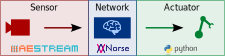Demonstration: laser pointer tracking
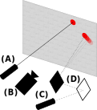
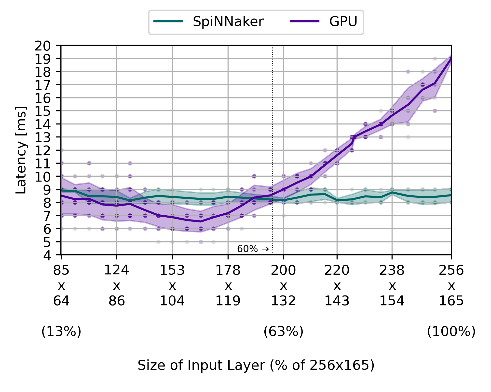
Romero et al., 2025
Open-source contributions
| Project | Downloads |
|---|---|
| AEStream | ~150k |
| Durin | ~60k |
| NIR | ~500k |
| Norse | ~250k |
| Total | ~1M |
Part II
Axiomatic computation
Computational classes
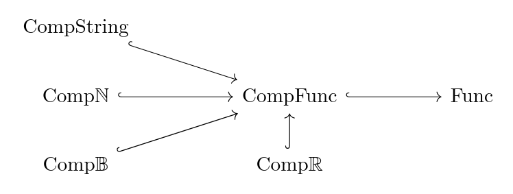Motivation for Neuromorphic Computing
Von Neumann Architecture

Wikipedia
Pain points
- Memory bottleneck
- Power consumption
- Real-time processing
A lot of room to improve
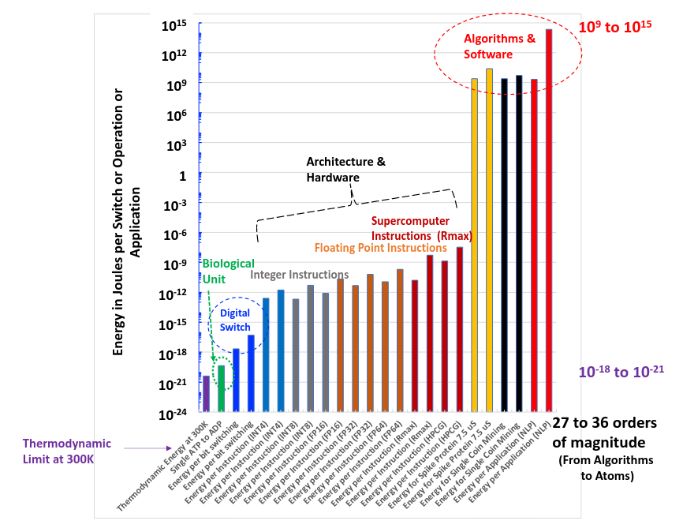How do we program neuromorphic systems?
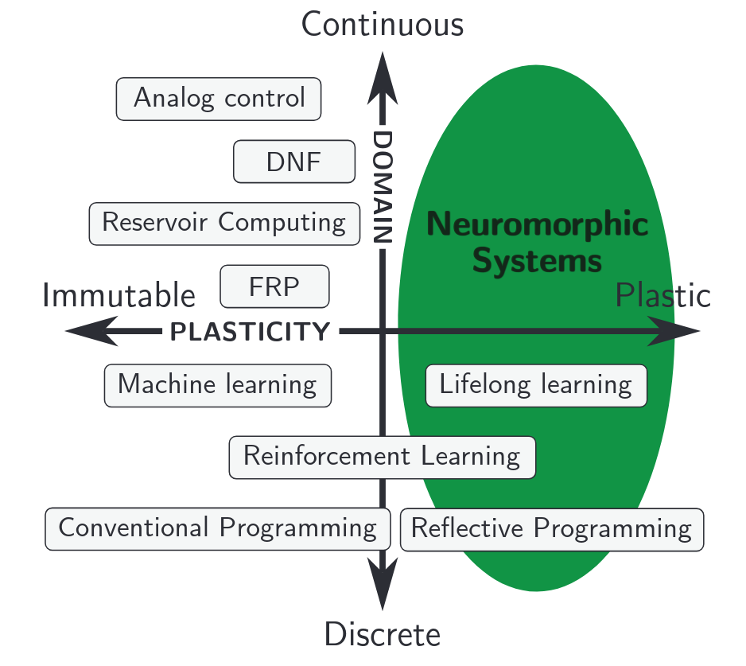Abreu & Pedersen, 2024
Neuromorphic Intermediate Representation (NIR)
Defines physical computational primitives as ODEs
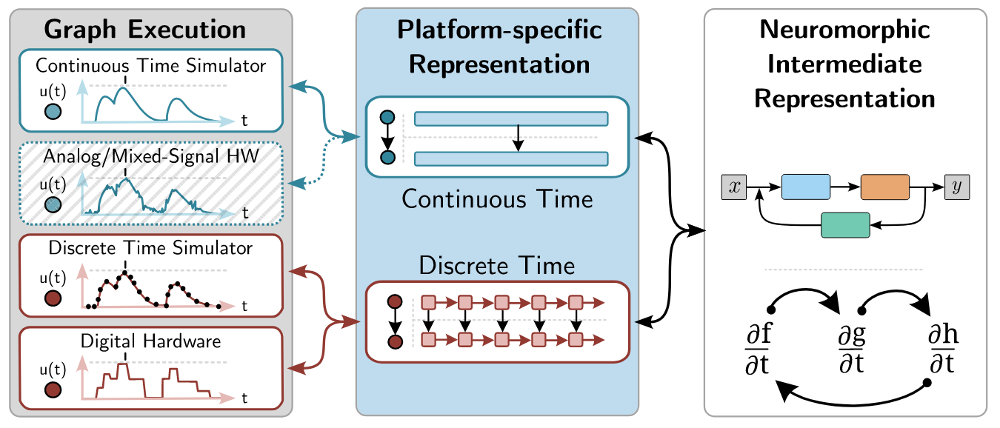
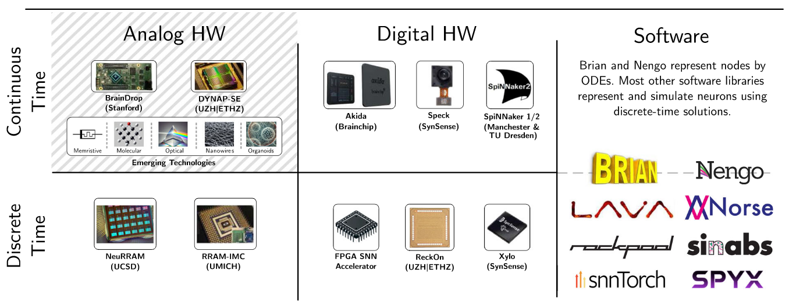
Pedersen et al., 2024
Why NIR?
- Interoperability between neuromorphic systems
- Axiomatic approach
- Hardware-software co-design
- Facilitates benchmarking and reproducibility
Next: a neuromorphic programming model
- Clear and unambiguous "instructions" (axioms 1, 2)
- Platform-independent representations (axiom 3)
- Guaranteed semantic retention (axiom 4)
Part III
Geometric approach to event-based vision
What the frog's eyes tell the frog's brain
Frog eyes are "bug detectors"
- Sharp, dark, moving edges
- Independent of luminosity
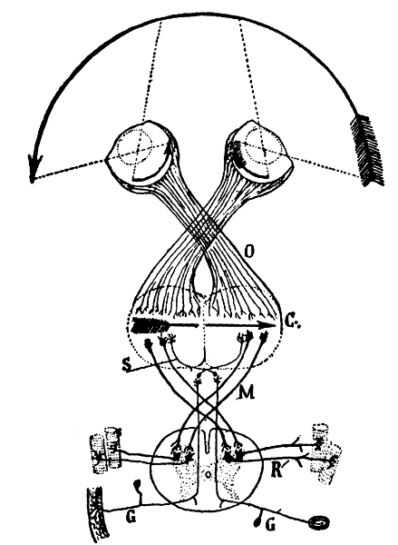
How do we
model
understand
brains?
model
understand
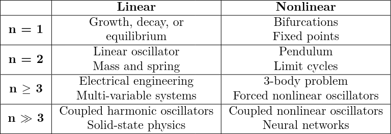
Adopted from Strogatz, "Nonlinear Dynamics and Chaos", 2019
Exploiting structure and symmetries
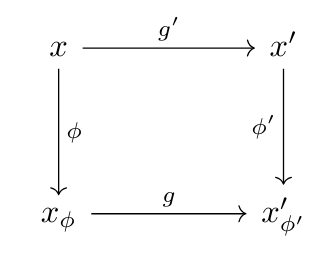| Signal: $x$ | Sun rising: $g$ | Bug detection: $x_\phi$ |
| Signal: $x$ | Movement: $g$ | Shape detection: $x_\phi$ |
Tracking objects with event-based vision
Covariant spiking neural networks
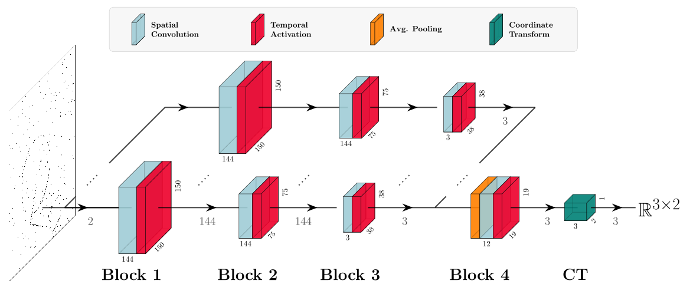
Leaky Integrator (LI)
vs. Leaky Integrate-and-Fire (LIF)
vs. Artificial Neural Network (ANN) —
with 8 frames
Tracking sparse objects
Why this matters?
- Real-time processing
- Purely neuromorphic
- Provably captures signal information
Next: Geometrizing event-based vision
- Axiomatic approach to neuromorphic computation
- Aligns with principles of physics
- Programmable and computable representations
Summary
-
Real-time processing
- Real-time event-based processing (III, IV, A, D, E)
- Spiking neural network accelerators (I, F)
-
Axiomatic computation
- Why axiomatization?
- Intermediate representations (I, III, F)
-
Geometric approach to event-based vision
- Why geometrization?
- Covariant spiking neural networks (IV, V, VI, A, F)
Acknowledgements
- Supervisors: Jörg Conradt, Arvind Kumar
- Collaborators: Tony Lindeberg, Steven Abreu, Jason Eshraghian, and many many others
- Family and friends